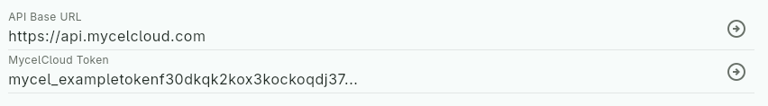
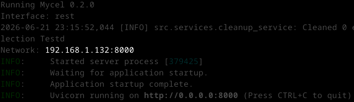
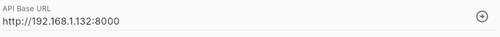

Getting started
Mycel Project is a learning ecosystem built around Mycel and usable through diverse clients: apps, plugins, and more.
Mycel Project is in early development. Clients are still few, but the ecosystem is growing.
Choose a client
Mycel runs through clients: any tool that implements the Mycel API. Your data lives in Mycel, not in the client, so you can switch or use multiple clients at any time.
If you don't have a specific tool in mind, Mycelium is the recommended starting point: a cross-platform app that covers the full Mycel workflow.
Already using a tool you'd like to use Mycel through? Check if a client exists for it. Don't see yours? You can build one or suggest it to the community.
Which client do you want to use?
Download and install Mycelium from the Mycelium page.
Find your client on Awesome Mycel and follow the installation instructions on its repository.
Set up Mycel
Mycel needs a server to run, store and sync your data. You can either use MycelCloud (a ready-to-use paid hosted service), or self-host your own instance. You can switch between them using the import/export feature.
How do you want to run Mycel?
Create an account on MycelCloud. You can freely test it without payment information for 1 month.
Follow the self-hosting guide to run your own Mycel instance.
Connect your client to Mycel
The steps below are shown from the Mycelium interface, but the logic should be the same from other clients, with minor differences detailed in your client's repository or documentation.
Go to the API Configuration page of Myceliumconfiguration section of your client and paste https://api.mycelcloud.com into the field requesting the Mycel API URL.
Go to your MycelCloud dashboard from the MycelCloud website and copy your token (click "Generate" if needed).
Paste your token into the Token field and validate.

You should now be connected to Mycel!
Launch Mycel as described in the Mycel documentation and copy the URL shown on Mycel startup
It will probably differ from the one shown here.

Go to the API Configuration page of Myceliumconfiguration section of your client and paste this URL into the field requesting the Mycel URL.
Validate.

You should now be connected to Mycel!
Troubleshooting
- Check that your Mycel URL is correct. It should not have a trailing slash and should be reachable from your browser.
- Check that your client is properly configured. Refer to your client's documentation for configuration details.
- Check that your device is connected to the internet. Try reaching mycelcloud.com from a browser to confirm.
- Check your MycelCloud token. Make sure it is fully copied with no extra spaces.
Still stuck? Check your client's documentation, or reach out to us.
Still stuck? Check the self-hosting troubleshooting section, your client's documentation, or reach out to us.
What's next?
Now you may want to watch the Mycel Project overview to get familiar with the ecosystem, or jump directly into the Mycelium documentationyour client's documentation, usually linked from Awesome Mycel.